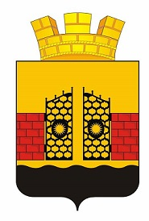
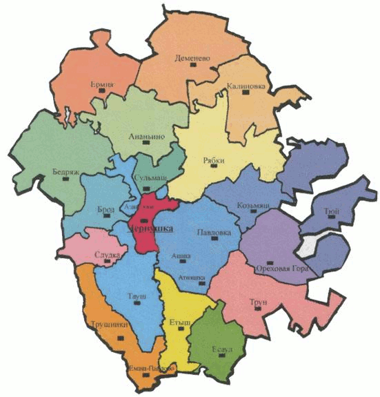

Чернушка - моя Родина
Toggle navigation
О проекте
Фотогалерея
Немного истории
Что посмотреть
Песни о городе
Видео
Факты о Чернушке
Проверь свои знания о любимом городе!
Почему город назвали Чернушкой?
Город получил свое название от небольшой реки, которая имела черные темные воды, так как солнечный свет едва проникал к ней через лес.
Дата основания поселения?
1854 год. Основана переселенцами из Чердыни.
Дата основания города?
1966 год.
Население города?
32982 человека на 2016 год.

Герб Чернушки (2011 год)
Какой национальный состав города?
Русские, татары, башкиры, удмурты.
Как называют местных жителей?
Чернуша́не, чернуша́нин, чернуша́нка, черну́шинцы, черну́шинец.
Когда отмечают день города?
Первая суббота сентября.
В каком году началась промышленная добыча нефти?
1958 год.

Чернушинский район
Какой средний возраст чернушан?
34 год.
Как ты думаешь в Чернушке более 100 улиц?
Да. Всего в Чернушке есть 160 улиц.
Назови почетных жителей г. Чернушка?
Всего в Чернушке 18 почетных жителей.
Азин Владимир Мартынович (1895-1920)
Антипкин Владимир Алексеевич (1929-2005)
Ведрова Галина Фёдоровна родилась в 1942 году.
Деревянных Фёдор Ульянович (1922-1998)
Кайгородов Владимир Николаевич (1902 - 1981)
Кобяков Николай Иванович
Котлова Ольга Капитоновна родилась 21.07.1917 г.
Копылов Виктор Николаевич (1929-2002).
Кривощеков Анатолий Александрович родился в 1936 году.
Кудымов Владимир Георгиевич родился 4 ноября 1935 года.
Мель Леонид Леонгардович (1903-1981).
Могилев Виктор Григорьевич родился 21 января 1946 года.
Морошкин Георгий Иванович родился 1 декабря 1932 года.
Перевозчиков Владимир Владимирович (18.06.1928-01.01.1999).
Францев Вячеслав Иванович (1929-1991).
Хлопин Вячеслав Григорьевич родился в 1925 году.
Хлопина Полина Ивановна родилась в 1924 году.
Шистеров Юрий Павлович родился в Перми в 1927 году.
Назови Героев Советского Союза г. Чернушка?
Брызгалов Иван Иванович
Бушмакин Алексей Петрович
Ведерников Николай Степанович
Иванов Степан Гаврилович
Ильиных Иван Михайлович
Красноперов Сергей Леонидович
Маслов Иван Васильевич
Некрасов Андрей Акимович
Сазонов Афанасий Илларионович
Усанин Илья Афанасьевич
Францев Евгений Иванович
Южанинов Иван Васильевич
Вверх ↑